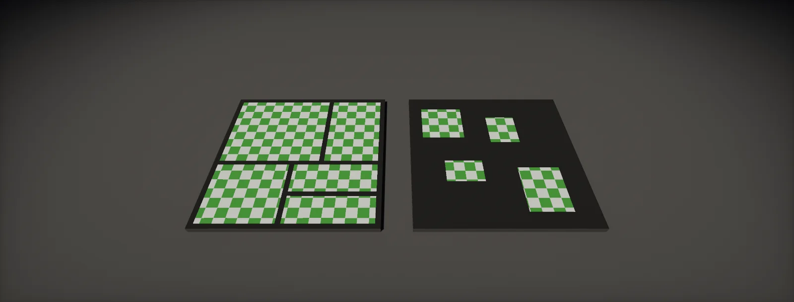

UV Layout and Cost
What a UV channel costs in bytes and bandwidth, 16-bit UVs and large tiling coordinates, seams in every channel and lightmap UVs, packing efficiency, overlapping and mirrored UVs, when an extra channel pays, and interpolators on mobile GPUs, built in Unity HDRP and Unreal.

What a UV channel costs
A UV channel is two numbers per GPU vertex: 8 bytes at 32-bit precision, 4 bytes at 16-bit. Next to a position, normal and tangent that is a large share of the vertex, and it is paid three times: in memory, in bandwidth every time a pass fetches the vertex, and in the vertices that its seams split:
Engines choose different defaults. Unreal stores UVs as 16-bit floats unless the static mesh's Use Full Precision UVs build setting is on. Unity stores them as 32-bit floats unless the project's Vertex Compression (Player Settings) applies: by default it covers normals, tangents and UV channels 0, 2 and 3, and keeps positions and UV1 (the lightmap channel) at full precision, and only for meshes without Read/Write, without mesh compression and not dynamically batched. Unity's Mesh Compression import setting is a different thing: it shrinks files on disk, not memory.
16-bit UVs and large tiling coordinates
A 16-bit float keeps 11 significant bits. Between 0 and 1 that is plenty: steps of about 1/2048 or finer. But the steps double with every power of two: tiling UVs that run to 64 or 128 across a long wall or a terrain mesh are rounded to steps that span many texels:
Three fixes, cheapest first. Move each UV island close to the origin by whole tiles: with a repeating texture, an island at u = 37.2 looks identical at u = 0.2, and the rounding error shrinks by a factor of 64 (the build chapter has a tool). Scale a small UV range up in the shader instead of storing large values (uv * tiling in the pixel shader, at full precision). Or store that one channel at 32 bits. Unique UVs in the 0–1 range never have the problem at texture sizes up to 4K.
Every UV channel splits vertices
A vertex is split wherever any of its attributes differs between the faces around it. So the GPU vertex count is set by the union of all seams: hard edges, UV0 seams, the seams of the lightmap UVs and of every other channel, and material borders:
Lightmap UVs are the usual surprise. They must not overlap and need padding in lightmap texels, so automatic unwrappers (Unity's Generate Lightmap UVs, Unreal's lightmap UV generation) cut their own seams, which rarely follow the UV0 seams. Hand-made lightmap UVs that reuse the UV0 seams avoid the extra splits; where UV0 is already unique and padded, it can serve as the lightmap channel itself.
Packing efficiency and wasted texels
A texture costs the same whether its islands fill 90 % of it or 50 %. The empty share is memory that holds nothing, and texel density that the islands do not get:
Packing is a trade against other costs. Many small islands pack tightly but need more seams (vertices) and more padding (texels around every island). Straightening islands into rectangles packs better and makes them usable as trims, at the cost of some stretching. Scaling islands by importance (more density on the visible side, less on the bottom) is legitimate as long as the visible density stays on target (texel density targets).
Overlapping, mirrored and offset UVs
The cheapest texels are the ones used twice:
- Stacked islands: identical parts (the four legs of a table, repeated bolts) share one island. Bakers need only one of them in the 0–1 square, so offset the copies by whole tiles (u + 1) during the bake; with a repeating sampler they map to the same texels in the game.
- Mirrored islands: symmetric halves share texels at the cost of a seam on the mirror line. Normal maps work mirrored because the tangent's fourth component stores the bitangent sign; bake with the mirrored halves offset out of the square, and check that the engine computes tangents with MikkTSpace so the sign is right.
- Not allowed: lightmap UVs and any UVs used for unique bakes (AO, curvature) must not overlap, or the stacked parts receive each other's light and occlusion.
Mid-poly assets with tiling materials need no unique bakes at all, so their UVs can overlap freely (the mid-poly workflow).
When an extra UV channel pays
Each extra channel costs bytes per vertex and seams, so it should replace something more expensive. The common cases and their alternatives:
| Second (or third) UV set for | Pays when | Alternative without a channel |
|---|---|---|
| Lightmaps | Baked lighting is used; UV0 overlaps or mirrors | UV0 as lightmap UV if it is unique and padded enough; probes or dynamic GI instead of lightmaps |
| A tiling material over a unique mask set | Masks need unique UVs and the tiling material needs a different layout or scale | One UV set times a tiling factor; world-space or triplanar projection (triplanar) |
| Trims and decals on the same mesh | Trim strips need a layout unlike the base | A separate decal mesh with its own UVs |
| Vertex data (pivots, phases, masks) | Wind, VAT or other per-vertex animation | Vertex colour or data textures (where vertex data can live) |
Projection in the shader (world-space planar or triplanar mapping) moves the cost from vertices to pixels: no channel, no seams, but two or three texture samples instead of one for every map. For dense meshes that cover few pixels, the channel is cheaper; for large simple surfaces, the projection.
Interpolators: UVs between the vertex and pixel stage
Every value the vertex shader passes to the pixel shader is an interpolator: UVs, normal, tangent, colour, world position. On desktop GPUs they stay on chip. Tile-based mobile GPUs run all vertex shading first and write its outputs to memory, then read them back per tile, so every interpolator costs bandwidth:
- Pack two float2 UVs into one float4 interpolator.
- Pass one UV and derive the others in the pixel shader (
uv * tiling + offset) instead of passing several scaled copies. - Use 16-bit (half) interpolators for colours and directions where the platform supports it; keep UVs of large textures at full precision.
Build it in Unity HDRP
The Unity route measures the UV cost of each mesh, moves tiling islands back near the origin so 16-bit UVs are safe, and sets the project-wide vertex compression. Written for Unity 6 with HDRP 17; Unity 2022 LTS works the same apart from a few renamed menu entries.
- Put both scripts in
Assets/Editor. Select meshes and run Tools > Optimization > UV Audit. It prints each UV channel's format and dimension, its largest value, the error that value would have at 16 bits, and how many vertices the channel's seams add. - Unused channels: an imported channel that no material reads still costs bytes and seams. Remove it in the DCC before export (Blender: Object Data > UV Maps); a second channel usually exists only for lightmaps.
- Lightmap UVs: tick Generate Lightmap UVs only for meshes that are actually lightmapped. Where UV0 is unique and well padded, copy it into UV1 in the DCC: identical UVs add no seams, so no extra vertices. Otherwise author UV1 in the DCC with its seams on the UV0 seams.
- Large tiling UVs: run Tools > Optimization > Recenter UV0 Islands on long walls, roads and floors before enabling 16-bit UVs. The audit then shows the largest value near 1.
- 16-bit storage: Project Settings > Player > Other Settings > Optimization > Vertex Compression. The default compresses normals, tangents and UV channels 0, 2 and 3; keep UV1 (lightmaps) and positions at full precision. It applies only to meshes with Read/Write off, Mesh Compression off, not skinned and not dynamically batched.
- Interpolators: in Shader Graph, pass one UV and compute scaled versions in the fragment stage; custom interpolators (Graph Settings > Custom Interpolators) let you pack two UVs into one Vector 4 when a vertex-stage value is needed.
// Assets/Editor/UVAudit.cs
// Tools > Optimization > UV Audit: per selected mesh, the vertex layout, each UV channel's format,
// its largest value and the error that value would have at 16 bits on a 2048 px texture, and how
// many vertices each channel's seams add (vertices that would merge if that channel were removed).
using System.Collections.Generic;
using System.Linq;
using System.Text;
using UnityEditor;
using UnityEngine;
using UnityEngine.Rendering;
public static class UVAudit
{
[MenuItem("Tools/Optimization/UV Audit")]
static void Run()
{
var sb = new StringBuilder("UV Audit\n");
foreach (var mf in Selection.GetFiltered<MeshFilter>(SelectionMode.Deep))
if (mf.sharedMesh) Report(mf.sharedMesh, sb);
Debug.Log(sb.ToString());
}
static void Report(Mesh m, StringBuilder sb)
{
int stride = 0; for (int s = 0; s < m.vertexBufferCount; s++) stride += m.GetVertexBufferStride(s);
sb.Append($" {m.name}: {m.vertexCount} vertices, {stride} B per vertex\n");
var channels = new List<int>(); var uvs = new List<Vector4>[8];
for (int ch = 0; ch < 8; ch++)
{
var attr = VertexAttribute.TexCoord0 + ch;
if (!m.HasVertexAttribute(attr)) continue;
channels.Add(ch); uvs[ch] = new List<Vector4>(); m.GetUVs(ch, uvs[ch]);
float max = uvs[ch].Max(u => Mathf.Max(Mathf.Abs(u.x), Mathf.Abs(u.y)));
float step = Mathf.Pow(2f, Mathf.Floor(Mathf.Log(Mathf.Max(max, 1e-6f), 2f)) - 10f);
sb.Append($" UV{ch}: {m.GetVertexAttributeFormat(attr)} x{m.GetVertexAttributeDimension(attr)}, largest |value| {max:F2}, " +
$"16-bit error up to {step * 0.5f * 2048f:F2} texels at 2048 px\n");
}
var pos = m.vertices; var nrm = m.normals;
int Unique(int skip)
{
var set = new HashSet<string>();
for (int i = 0; i < pos.Length; i++)
{
var k = new StringBuilder();
k.Append(Vector3Int.RoundToInt(pos[i] * 10000f)).Append(nrm.Length > 0 ? Vector3Int.RoundToInt(nrm[i] * 1000f).ToString() : "");
foreach (int ch in channels) if (ch != skip) k.Append(Vector2Int.RoundToInt((Vector2)uvs[ch][i] * 100000f));
set.Add(k.ToString());
}
return set.Count;
}
int all = Unique(-1);
foreach (int ch in channels) sb.Append($" seams of UV{ch} add {all - Unique(ch)} vertices\n");
}
}// Assets/Editor/RecenterUVIslands.cs
// Tools > Optimization > Recenter UV0 Islands: moves every connected piece of UV0 by whole tiles
// so it sits near the 0..1 square. With a repeating texture the result looks identical, and 16-bit
// UVs keep their precision. Pieces are found through shared vertices, so pieces split by other
// channels or hard edges move separately, which is fine: each triangle keeps its own UVs.
using System.Collections.Generic;
using System.IO;
using UnityEditor;
using UnityEngine;
public static class RecenterUVIslands
{
[MenuItem("Tools/Optimization/Recenter UV0 Islands")]
static void Run()
{
foreach (var mf in Selection.GetFiltered<MeshFilter>(SelectionMode.Deep))
{
var src = mf.sharedMesh; if (src == null) continue;
var m = Object.Instantiate(src); m.name = src.name + "_UVRecentered";
var uv = new List<Vector2>(); m.GetUVs(0, uv); if (uv.Count == 0) continue;
var tri = m.triangles;
// union-find over vertices connected by triangles
var parent = new int[uv.Count]; for (int i = 0; i < parent.Length; i++) parent[i] = i;
int Find(int x) { while (parent[x] != x) x = parent[x] = parent[parent[x]]; return x; }
for (int t = 0; t < tri.Length; t += 3) { int a = Find(tri[t]); parent[Find(tri[t + 1])] = a; parent[Find(tri[t + 2])] = a; }
var sum = new Dictionary<int, Vector2>(); var cnt = new Dictionary<int, int>();
for (int i = 0; i < uv.Count; i++) { int r = Find(i); sum.TryGetValue(r, out var s); sum[r] = s + uv[i]; cnt.TryGetValue(r, out var c); cnt[r] = c + 1; }
float before = 0f, after = 0f;
for (int i = 0; i < uv.Count; i++)
{
int r = Find(i); Vector2 centre = sum[r] / cnt[r];
Vector2 shift = new Vector2(Mathf.Floor(centre.x), Mathf.Floor(centre.y));
before = Mathf.Max(before, Mathf.Abs(uv[i].x), Mathf.Abs(uv[i].y));
uv[i] -= shift;
after = Mathf.Max(after, Mathf.Abs(uv[i].x), Mathf.Abs(uv[i].y));
}
m.SetUVs(0, uv);
string p = AssetDatabase.GetAssetPath(src);
string dir = string.IsNullOrEmpty(p) ? "Assets" : Path.GetDirectoryName(p).Replace('\\', '/');
string path = AssetDatabase.GenerateUniqueAssetPath($"{dir}/{m.name}.asset");
AssetDatabase.CreateAsset(m, path);
Undo.RecordObject(mf, "Recenter UV islands"); mf.sharedMesh = m;
Debug.Log($"{src.name}: largest |UV0| {before:F1} -> {after:F2} ({cnt.Count} pieces) -> {path}");
}
}
}Mesh Compression (model import settings) only shrinks files on disk and is decompressed on load; it does not reduce memory, and a mesh using it is excluded from Vertex Compression.
Build it in Unreal Engine
Unreal stores UVs at 16 bits by default and can generate lightmap UVs into an extra channel; both are build settings per LOD. Written for Unreal Engine 5.6 and later. Substrate is production-ready from 5.7; check Project Settings > Rendering > Substrate to see which material model a project uses.
- Open the mesh in the Static Mesh Editor and use the UV toolbar button to view each channel. Remove channels that no material reads, in the DCC before export or with the editor scripting call
remove_uv_channelof the Static Mesh Editor Subsystem. - Build Settings > Use Full Precision UVs: leave it off for UVs in a small range; turn it on, or better recentre the islands in the DCC, for long tiling meshes whose UVs run far beyond 1.
uv_audit.pyreports the setting for a selection and can set it. - Lightmaps: Generate Lightmap UVs writes a new channel (Destination Lightmap Index) from a source channel. With Lumen and no baked lighting, turn it off and delete the channel. Where baked lighting is used and UV0 is unique, set the mesh's Light Map Coordinate Index to 0 instead of generating one.
- Projection instead of a channel: WorldAlignedTexture and WorldAlignedNormal (triplanar) material functions, at the cost of extra samples.
- Interpolators: material Customized UVs move UV math to the vertex shader and add interpolators; use them where they save pixel work, and keep their number small on mobile.
# uv_audit.py: select static meshes in the Content Browser, then run it.
# Lists UV channels, UV precision and lightmap generation per LOD; set FULL_PRECISION to change it.
import unreal
FULL_PRECISION = None # None = only report; True or False = set it on every LOD
sub = unreal.get_editor_subsystem(unreal.StaticMeshEditorSubsystem)
for mesh in unreal.EditorUtilityLibrary.get_selected_assets():
if not isinstance(mesh, unreal.StaticMesh):
continue
for lod in range(sub.get_lod_count(mesh)):
s = sub.get_lod_build_settings(mesh, lod)
if FULL_PRECISION is not None:
s.set_editor_property("use_full_precision_u_vs", FULL_PRECISION)
sub.set_lod_build_settings(mesh, lod, s)
bits = 32 if s.get_editor_property("use_full_precision_u_vs") else 16
if s.get_editor_property("generate_lightmap_u_vs"):
lm = f"lightmap UVs generated from channel {s.get_editor_property('src_lightmap_index')} into {s.get_editor_property('dst_lightmap_index')}"
else:
lm = "no generated lightmap UVs"
unreal.log(f"{mesh.get_name()} LOD{lod}: {sub.get_num_uv_channels(mesh, lod)} UV channels, {bits}-bit UVs, {lm}")Nanite stores UVs quantised per cluster with its own precision; the Full Precision setting applies to the non-Nanite mesh and the fallback.
Sources and further reading
The formulas and engine details in this unit come from these references. Engine documentation changes between versions.
- DocsConfigure mesh compressionUnityVertex Compression (FP16 channels, default channels, conditions) against Mesh Compression (disk only).
- DocsMeshBuildSettingsEpic GamesUse Full Precision UVs and High Precision Tangent Basis per LOD.
- DocsVertexAttributeFormatUnityFormats available for each vertex attribute.
- ReferenceHalf-precision floating-point formatWikipediaBit layout and precision of FP16.
- LibrarymeshoptimizerArseny KapoulkineQuantising UVs to half floats or 16-bit normalised integers.
- DocsGenerating lightmap UVsUnityAutomatic lightmap unwraps, padding and their settings.
- DocsMali GPU best practicesArmVertex outputs, interpolators and bandwidth on tile-based GPUs.